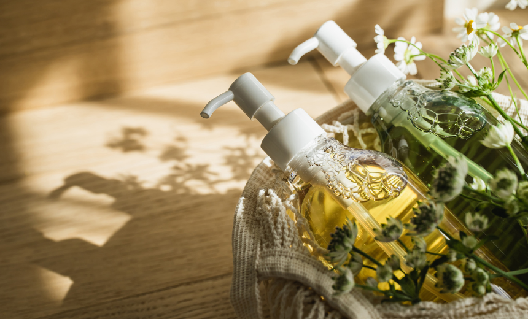

MENU

自然のハーブで髪を優しく包みこみ、緑を育てるシャンプー。地球にやさしい原材料で作られ、美しい髪があなたを輝かせます。自然の贈り物、地球への優しい贅沢なご褒美です。
大自然のハーブが髪を癒し、緑豊かな未来を築く。美しい髪が生まれるだけでなく、地球にやさしい原材料で作られたエコなシャンプー。自分へのご褒美や、大切な人への贈り物に最適です。
ハーブの力で髪に自然な輝きを。美しさとエコを追求したシャンプー。地球にやさしい原材料で製造し、緑を育むサイクルに参加。自分へのご褒美に、環境に優しい選択を。
自然のハーブが宿るシャンプーで、美しい髪を手に入れよう。地球にやさしい原材料で作り、緑を育てる一環として。自分へのご褒美や、大切な人へのプレゼントにも最適なエコロジーシャンプーです。
© 2024 momo_blue.